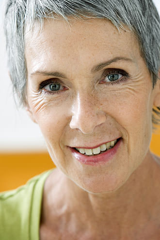

{% set page = { title: "LesJours — Player" } %}
{% extends "partials/layout.html" %}

{% block content %}
<article style="padding-top: 100px">
	<div class="container">
		<div class="row article-container">
			<figure>
				<div class="player">
					<div class="container">
						<audio aria-hidden="true">
							<source type="audio/webm" src="img/episode-2/1.webm" />
							<source type="audio/mp4"  src="img/episode-2/1.m4a" />
						</audio>
						<button class="btn-blank" type="button">
							<div class="container">
								
							</div>
						</button>
					</div>
				</div>
			</figure>
		</div>
	</div>
</article>
{% endblock %}